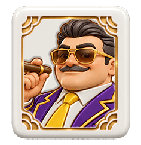
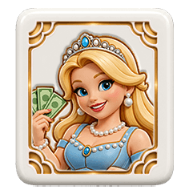
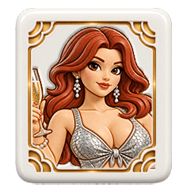
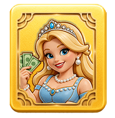
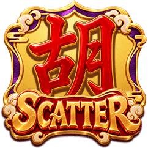
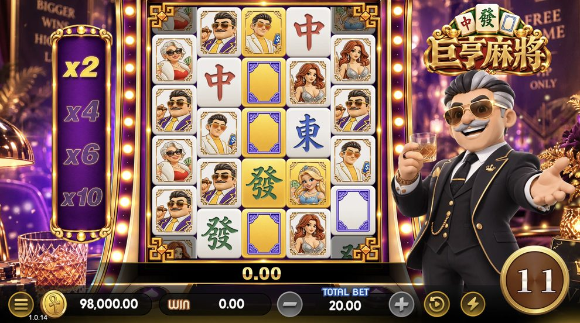
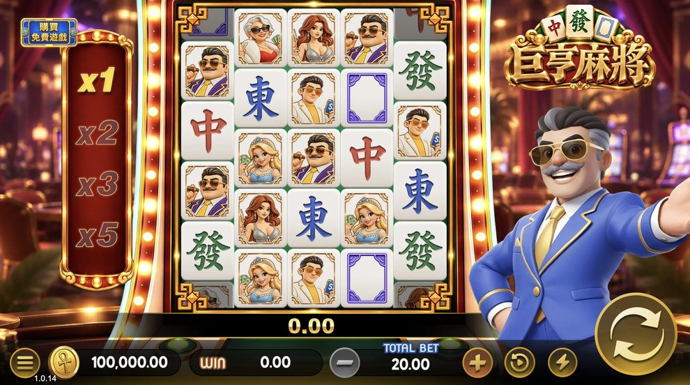

- 3 輪
- 10.0
- 4 輪
- 25.0
- 5 輪
- 50.0
SF-SLOT-003 / GAME INFO
一般符號須從最左輪開始，在相鄰的 3 輪以上成立中獎組合。以下依成立的 3 輪、4 輪或 5 輪列出賠付數值。
賠付單位與投注換算：待確認。



美鈔 WILD 可替代一般付費符號，不能替代「胡」SCATTER。WILD 自身賠付：待確認。
相同一般符號從最左輪起，連續出現在相鄰至少 3 輪即可形成中獎組合。將各成立輪的有效符號數量相乘，得到該符號的中獎 Ways 數。
同一輪有多顆符號會增加組合數，但不能取代成立輪數。2000 Ways 是盤面的組合容量，不代表每次旋轉都有 2000 個中獎組合。
［Ways 計數示意；非實際遊戲截圖］
輪別 1 2 3 4 5
盤面格數 4 5 5 5 4
Baron數量 2 1 3 0 0
└── 左起連續 3 輪 ──┘
2 × 1 × 3 ＝ 6 Ways
使用 Baron 的「3 輪」賠付欄位
本例不含 WILD；未示出的格子為其他符號，不另形成 Baron 組合。實際金額換算：待確認。
有中獎時，先計算本階贏分並套用當前倍數，再進行消除、補位及適用的黃金符號轉換。新盤面繼續判定，直到沒有新的中獎組合為止。
一次旋轉可包含多次消除，各階贏分累加為本次旋轉贏分。連續消除不另扣投注，也不額外扣除免費遊戲次數。
同符號不同連續長度、共用 WILD 與重疊組合的計獎方式：待確認。
［成立 Ways］
↓
［套用當前倍數，計算本階贏分］
↓
［消除；中獎黃金符號原位保留］
↓
［新符號補位完成］
↓
［中獎黃金符號轉 WILD］
↓
［使用下一階倍數，繼續判定］
無新中獎組合 → 本次連鎖結束一般符號可呈現黃金狀態，仍保留原符號身分與本階賠付。黃金化本身不額外付獎，也不保證中獎。
黃金符號參與中獎時，先以原符號計算本階贏分，原位置保留；新符號補位完成後，才轉成美鈔 WILD，參與下一階判定。未參與中獎的黃金符號不會只因黃金化而自動轉換。

黃金狀態對應原本九種一般符號，不是額外牌種。
以 Baron 為例。只有參與中獎的黃金牌，才會在補位完成後轉成 WILD；此圖為外觀對照，並非一次實際旋轉紀錄。
| 位置 | 主遊戲 | 免費遊戲 |
|---|---|---|
| 第 1、5 輪 | 不由此功能黃金化 | 不由此功能黃金化 |
| 第 2、4 輪的一般符號 | 隨機黃金化 | 隨機黃金化 |
| 第 3 輪的一般符號 | 隨機黃金化 | 必定黃金化 |
WILD 與「胡」SCATTER 不適用黃金化。黃金符號與生成 WILD 的跨旋轉保留／清除方式：待確認。
| 消除階次 | 第 1 階 | 第 2 階 | 第 3 階 | 第 4 階起 |
|---|---|---|---|---|
| 本階倍數 | ×1 | ×2 | ×3 | ×5 |
每次主遊戲旋轉從 ×1 開始。有獎才推進下一階，先用當前倍數結算，再使用下一階倍數；第 4 階之後維持 ×5。同一階有多種符號中獎，也只推進一階。
沒有新的中獎組合時結束連鎖；本次主遊戲旋轉完成後，倍數重置為 ×1。

「胡」可在盤面任意位置出現。取得 3 顆「胡」可獲得 10 次免費遊戲，每多 1 顆增加 2 次。
| 胡的數量 | 3 | 4 | 5 |
|---|---|---|---|
| 免費遊戲次數 | 10 | 12 | 14 |
WILD 不能代替「胡」。SCATTER 的計數時點及跨消除階計數方式：待確認。SCATTER 獨立賠付：待確認。

可左右捲動查看完整畫面。
免費遊戲進入 VIP 廳，左側顯示 ×2／×4／×6／×10 階梯，右下顯示剩餘次數。第 3 輪一般符號必定呈現黃金狀態，第 2、4 輪仍為隨機黃金化。
截圖待更新：部分黃金牌外觀與目前符號素材不同。畫面中的 11 為當下剩餘次數，不代表固定初始局數；投注與贏分僅為畫面示意。
| 消除階次 | 第 1 階 | 第 2 階 | 第 3 階 | 第 4 階起 |
|---|---|---|---|---|
| 本階倍數 | ×2 | ×4 | ×6 | ×10 |
有獎才推進下一階，先用當前倍數結算；第 4 階之後維持 ×10。同一階多種符號中獎不會連跳數階。
跨免費旋轉的倍數重置方式，以及再觸發是否影響當前倍數：待確認。
免費遊戲中再次取得合格的 3 顆以上「胡」，依相同規則追加次數：3 顆追加 10 次，每多 1 顆再加 2 次；4 顆追加 12 次，5 顆追加 14 次。
一次免費旋轉包含其全部消除連鎖。局數扣減與追加順序、總次數上限及最後一局再觸發處理：待確認。
［取得免費遊戲資格］
↓ Kai 發動轉場
［VIP 廳：免費遊戲］
↓ 次數耗盡且無有效追加
［Kai 發動轉場，返回一般廳］
↓
［顯示 TOTAL WIN］選擇投注金額，按下旋轉按鈕開始遊戲。盤面共有 5 輪，由左至右為 4／5／5／5／4 格，共 23 格，提供 2000 Ways 的組合容量。
| 遊戲資訊 | 內容 |
|---|---|
| 理論返還率（RTP） | 96.95% |
| 投注金額、級距與預設值 | 待確認 |
| 幣別或點數換算 | 待確認 |
| 購買免費遊戲／Ante Bet | 不提供 |

可左右捲動查看完整畫面。
左側為主遊戲倍數階梯，中央為盤面，右側為 Kai；下方顯示投注與贏分資訊。
截圖待更新：圖中「購買免費遊戲」按鈕不適用於本版規則；畫面金額僅為示意。
| 控制項 | 操作說明 |
|---|---|
| 投注調整 | 選擇本次旋轉的投注金額；可用級距待確認 |
| 旋轉 | 開始一次遊戲 |
| BIG WIN 系列 | 點擊可加速／跳過報獎演出，不改變中獎結果 |
| 其他操作與可用狀態 | 待確認 |
最高贏分：100,000 倍。計算基準、累計範圍與達上限處理：待確認。
遊戲中斷後的恢復方式與玩家操作：待確認。
提示內容與玩家操作：待確認。